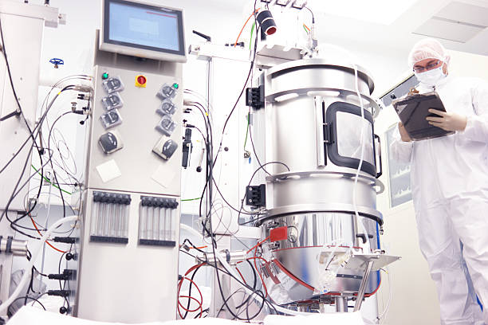
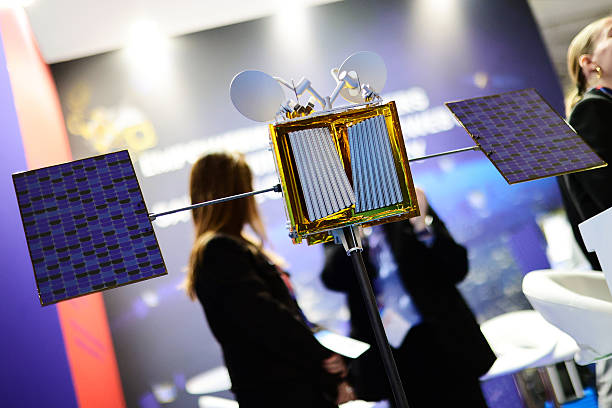
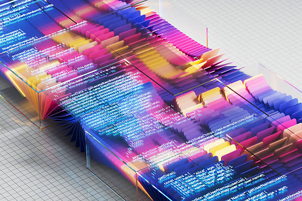

 |
 |
 |
|---|---|---|
| Sistemas ILPF (Integração Lavoura-Pecuária-Floresta) e Pecuária de Baixo Carbono: A grande revolução atual não é apenas tecnológica, mas de manejo. O sistema ILPF alterna ou combina a criação de gado com o cultivo de grãos e o plantio de árvores em uma mesma área. As árvores fornecem sombra (melhorando o bem-estar animal) e capturam os gases de efeito estufa emitidos pelo gado. O resultado é a produção da chamada "carne carbono neutro", uma exigência crescente dos mercados internacionais, além de recuperar pastagens degradadas. | A tecnologia vestível chegou ao pasto. Hoje, bovinos utilizam colares, brincos eletrônicos e sensores inteligentes que funcionam conectados à Internet das Coisas (IoT). Esses dispositivos coletam dados 24 horas por dia sobre a saúde, a movimentação e a digestão de cada animal. Com o apoio da Inteligência Artificial, o produtor recebe alertas no celular para tratar doenças antes mesmo que elas se agravem, garantindo um rebanho mais saudável e produtivo. | A pressão por sustentabilidade fez com que a rastreabilidade se tornasse uma prioridade na agropecuária. Usando a tecnologia blockchain e o monitoramento via satélite, é possível registrar e proteger todas as informações sobre a vida do animal, desde o seu nascimento até a chegada ao supermercado. Isso garante aos compradores e consumidores que os produtos são livres de desmatamento e estão em conformidade com as leis ambientais e trabalhistas. |
O Brasil se consolidou como uma potência mundial na produção de embriões bovinos em laboratório. Hoje, os produtores não dependem mais de "tentativa e erro" para melhorar o rebanho. Logo após o nascimento de um bezerro, um simples fio de cabelo da cauda é coletado para sequenciar o seu DNA. Esse mapeamento genômico prevê com precisão se o animal será resistente a doenças, se terá uma carne de alta qualidade ou se produzirá muito leite. Quando encontram fêmeas e machos de "elite", os produtores usam a Fertilização In Vitro (FIV). Em vez de uma vaca ter um bezerro por ano de forma natural, seus óvulos são coletados, fecundados em laboratório e os embriões são gerados em vacas receptoras (como "barrigas de aluguel"). Assim, uma única vaca de excelência pode deixar dezenas de descendentes em um só ano. |
|
A grande revolução desse processo é a velocidade da evolução. O que antes demorava décadas de cruzamentos tradicionais para ser alcançado, agora é feito em 3 ou 4 anos. O impacto financeiro e ambiental disso é gigantesco: um boi com genética superior cresce mais rápido e atinge o peso ideal de abate muito mais cedo (o chamado "boi precoce"). Isso significa que o animal passa menos tempo no pasto emitindo gás metano (um dos grandes vilões do efeito estufa) e consumindo água e capim. Basicamente, essa tecnologia permite ao pecuarista produzir muito mais carne e leite utilizando um número menor de animais e uma área menor de terra, liberando espaço para outras culturas ou preservação. |